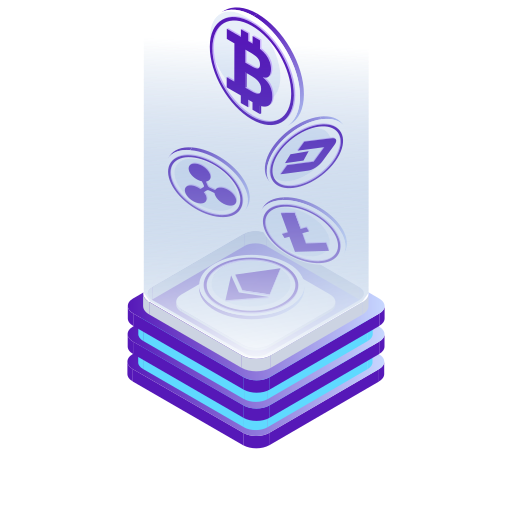

Q4 2019
Emergence of idea 'YOLO Coin'
Analysis of the market and competitors have taken place during this period

about us
Tusk coin is a BEP-20 token with additional functionality on top of that. You can stake Tusk Coins! We already created a small platform where you can stake Tusk, Wrapped Binance, and Doge coins. By staking these tokens with us, you'll be automatically joined to the Tusk Farm contract and you'll receive a reward by getting more Tusk tokens at the end of each Q(quarter)
At the end of Q2, we will drop the NFT collection of Ice Age animals. You will be able to mint NFT for Tusk Tokens on the pre-sale stage. And lately, it will be available on OpenSea, Binance NFT, and other platforms.
Let's talk about our advantages
We Translate Your Dream Into Reality
-

SAFE&SECURE
As with any BEP-20 token, it includes providing a secure and trustworthy way for contracting between strangers on the internet to make traditional contracts less expensive and more secure at the same time, using the scope of smart contracts. Since Tusk coin is based on BEP-20, commissions are less, and its DeFi system -

EARN BONUS
20% of the total supply is on Tusk Farm contact. These tokens will be given as a reward to our holders and people who stake in our application. -

SEVERAL PROFITS
Tusk token is burnable so 25% of all tokens will be burned. First mass burning at the end of Q1 -
LOW COST
We are in the early stage. This is a perfect time to buy our token on some amount. Burning is the process in which users can remove tokens (also called coins) from circulation, which reduces the number of coins in use. The tokens are sent to a wallet address that cannot be used for transactions other than receiving the coins. -

ICE AGES PLAY-TO-YEARN GAME
We started working on the creation of the Ice Ages Play to yearn game. Where you can see untouched nature and thousands of extinct animal species and hunt them down to survive and earn Tusk coins. -

TUSK DIMENSION METAVERSE
We want to create a crazy metaverse of Tusk dimension from Rick and Morty and basically, there will be the same humans, companies but with tusks. You'll be able to spend some time in crazy and funny places and have a chat with others.
Token Sale
Breakdown of our Token Recipients
- 15- liquidity pool (30%)
- 10- staking pool (20%)
- 12,5 - burning (25%)
- 10 - advertising&team (20%)
- 2,5 - to WWF (5%)
Roadmap
That's your work plan with Tusk
- 2019
- 2020
-
Q1 2020
Oct-2017 Date of Pre ICO
YOLOWORLD Coins was offered to the public -
Q2 2020
New Exchange WAVES Platform
Transfer from YOLOWORLD wallet to WAVES was process to all ICO participants - 2018
-
 Q1 GOALS 2018
Q1 GOALS 2018
- 100,00 live users
- Secure a user reach of 1 million
- Live on major exchanges
- Grow YOLO Team
- Launch YOLO Wallet
-
Q1 2018
Re-branding of YOLO & YOLO Wallet launch
Transfer from YOLOWORLD wallet to WAVES was process to all ICO participants AIRDROP! -
Q2 2018
Listings on other Exchangers
Video tutorials how to trade & more marketing promotion ON GOING PROJECT -
Q3 2018
CMC Listings | On going YOLO stores
More product line in YOLO stores that fits within customer requirements ON GOING PROJECT -
Q4 2018
iPhone & Android App Integration
YOLO Debit Cards
YOLO convience stores
YOLO Debit Cards
Bitcoin / YOLO ATM machines
Eftpos Machines ON GOING PROJECT - 2019
-
Q1 2019
YOLO Convenience Store Franchising
YOLO Eftpos machines
YOLO convience stores
YOLO Debit Cards
Bitcoin / YOLO ATM machines
Eftpos Machines -
Q2 2019
Bitcoin / YOLO ATM Machines